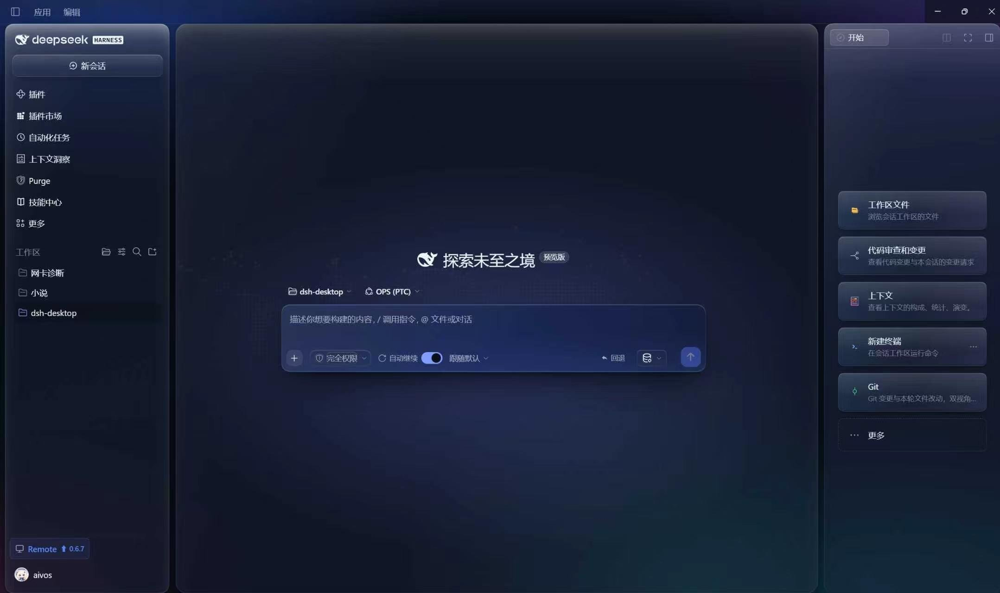
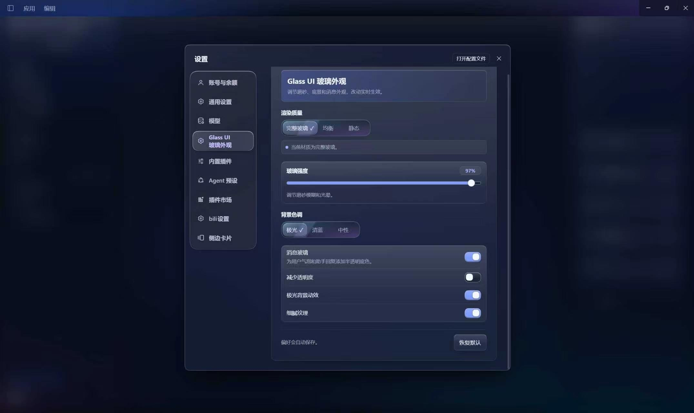

给 dsh 的对话、侧栏、输入区和浮层加一层分层磨砂：强度、背景色调、消息玻璃都能实时调，跟随宿主深浅主题与系统辅助功能偏好。


画布极光底景 → 栏级玻璃板（22px 圆角、26px 模糊、顶部高光）→ 卡级薄玻璃；输入区是最高一级 40px。
约 140 个 --dsw-* 变量写成深浅双值，压一层到宿主主题上，第三方插件读 token 也会一起玻璃化。
强度、色调、消息玻璃、透明度、动效、纹理，改完立刻生效并自动保存到本地。
减少动态效果、减少透明度、增加对比度、强制颜色四种偏好实时生效，解除后回到你上次选的外观。
2.5 秒内平均帧时间超过 22ms，或逻辑核心 ≤ 4，自动切到均衡档；手动选过质量就不再干预。
宿主侧 apply() 空实现，不注册工具、不读文件、不发网络请求，禁用时样式与偏好全部还原。
git clone https://github.com/aivos-xie/dsh-glass-ui.git /tmp/dsh-glass-ui
dsh plugin --profile web add /tmp/dsh-glass-ui
# 桌面版把 web 换成 desktop
# 装完刷新页面 → 设置 → Glass UI 玻璃外观| 项 | 作用 |
|---|---|
| 渲染质量 | 完整玻璃 / 均衡 / 静态。均衡降低模糊开销，静态改实色表面并关掉过渡。 |
| 玻璃强度 | 0–100%，默认 60%，同时控制模糊半径和底景光晕。 |
| 背景色调 | 极光 / 清蓝 / 中性，各自跟随深浅主题。 |
| 消息玻璃 | 用户气泡与助手回复的半透明底色。 |
| 减少透明度 | 实色表面，模糊归零，等同系统的减少透明度偏好。 |
| 极光背景动效 / 细腻纹理 | 默认关闭，只在完整档可用。 |